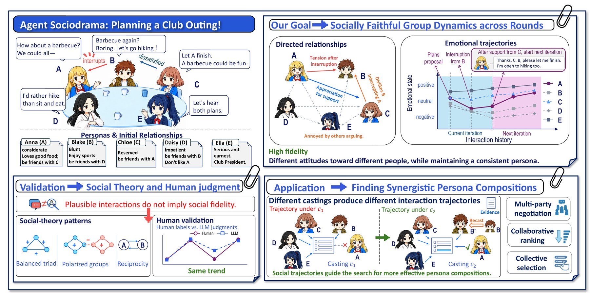
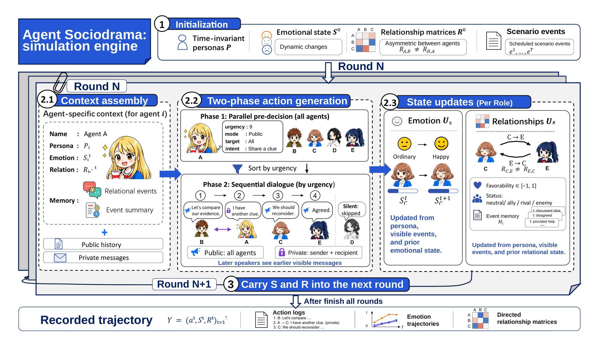
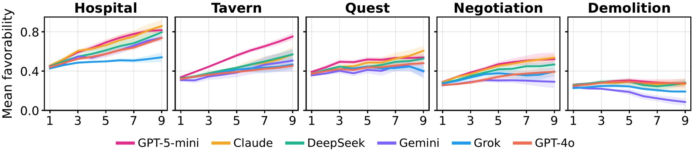
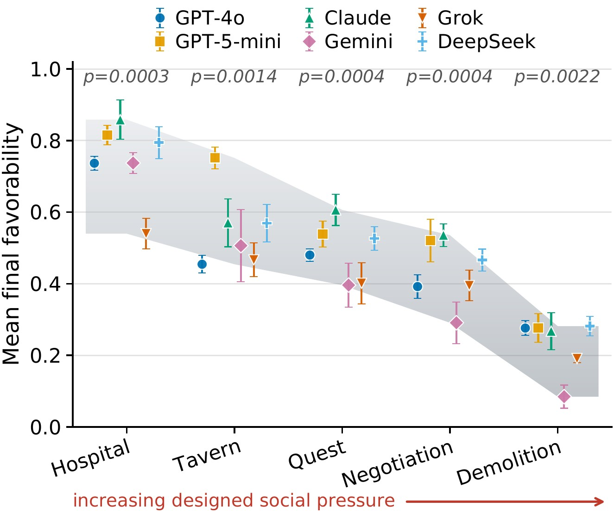
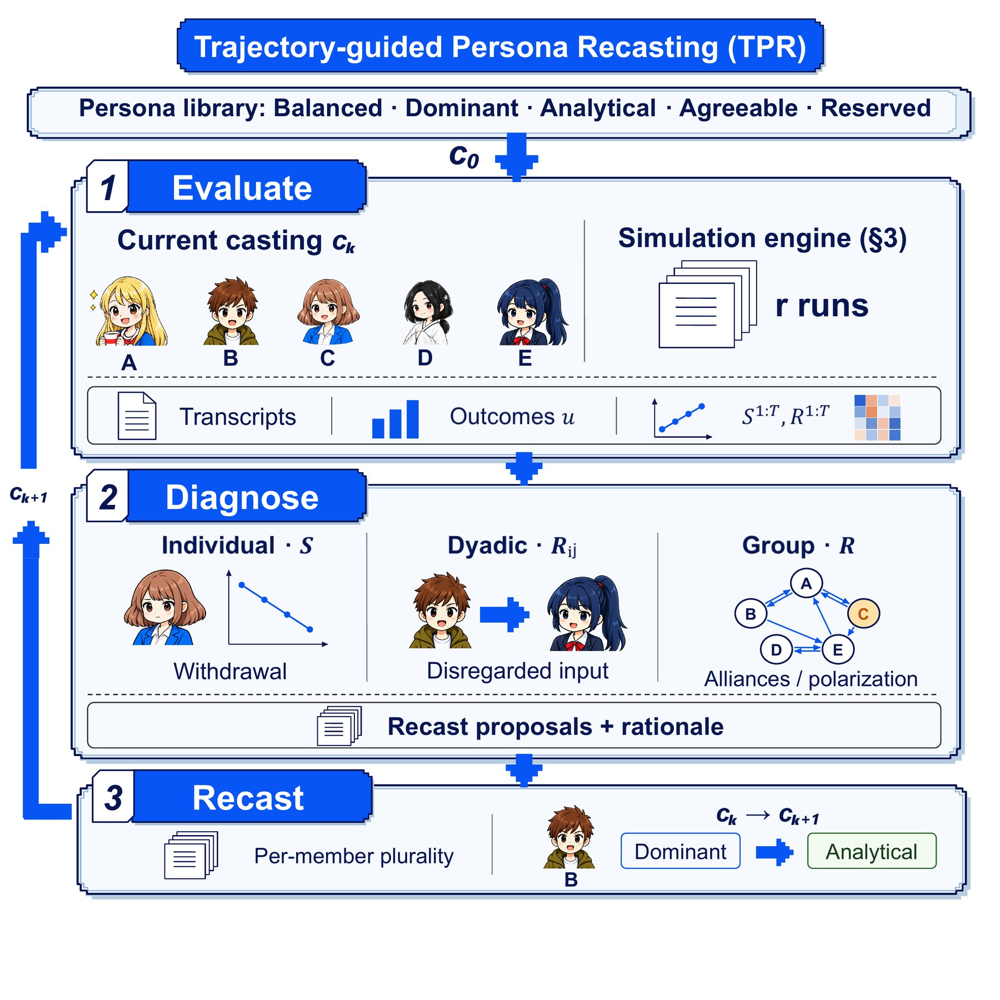
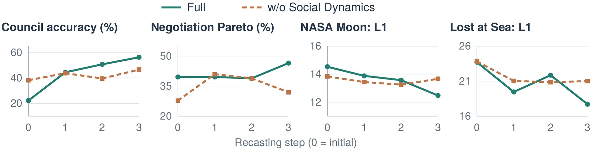
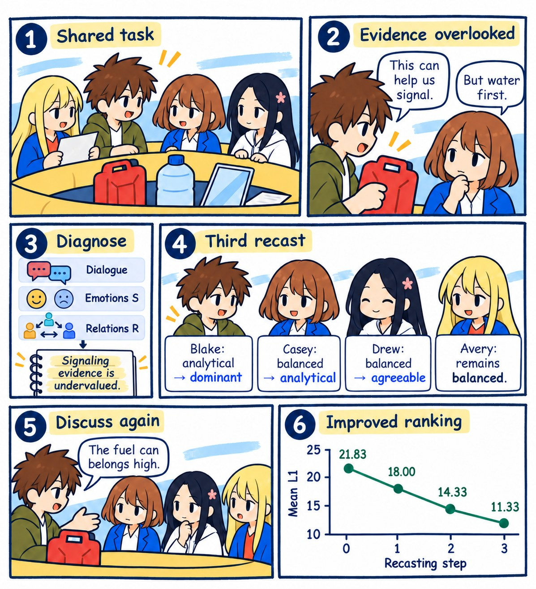

Social-Dynamics-Guided Persona Recasting for LLM Agent Teams
1Beihang University 2Nanyang Technological University, Singapore
†Corresponding authors

Large language model (LLM) agents are increasingly deployed as teams, yet they fail in characteristically social ways: information holders stay silent, dominant speakers anchor groups on wrong answers, and norm violations go unsanctioned. We present Agent Sociodrama, a framework for modeling and validating evolving social dynamics in LLM agent teams. Under fixed personas, agents' emotional states and directed, asymmetric relationships are updated every round by a unified external LLM judge and shape their subsequent interactions. Across six LLM backbones and five social scenarios, we assess social fidelity through classical social-theory patterns and agreement with human judgments. The resulting trajectories exhibit structured social patterns and model-specific differences.
We then introduce Trajectory-Guided Persona Recasting (TPR), which diagnoses group-dynamic failures from interaction transcripts and social trajectories and recasts agent personas before rerunning the task. Across four collaborative benchmarks, TPR improves performance from both heterogeneous and randomly initialized agent persona compositions, yielding up to 83.3%p of accuracy improvement over the initial casting. On representative distributed-information cooperation and mixed-motive bargaining tasks, we outperform SOTOPIA and AgentVerse in three of four comparisons, by up to 37.5%p in Pareto rate. These results show that validated social trajectories provide actionable signals for repairing LLM agent teams.
Each agent has a fixed persona, an emotional state S, and a directed relationship R toward every other agent. In every round, agents decide whether to speak publicly, message someone privately, or stay silent, and speak in order of urgency. An external LLM judge then updates each agent's emotional state and relationships from the events it could observe.

We run five scenarios of increasing social pressure, from a hospital ethics review to a demolition standoff, with six LLM backbones and five nine-round episodes per condition. From Hospital to Demolition, mean final favorability drops from 0.75 to 0.23, structural balance from 100.0% to 71.7%, and repair from 58.5% to 18.9%, while relationships emerge gradually over rounds rather than being fixed at initialization.


Final favorability differs significantly across the six models in every scenario (Kruskal–Wallis, all p < 0.01). Model-specific social dynamics are multidimensional: positive affect and high reciprocity do not necessarily imply favorable or repairable relationships.
On items where at least seven of thirteen human raters agree, the LLM judge matches the human majority on 76.2% of relationship updates and 88.2% of emotional updates.

TPR treats team composition as a searchable design variable. It evaluates a casting over repeated episodes, diagnoses team failures from the transcripts and the emotional and relational trajectories, and recasts the personas of the agents involved by majority vote across episodes, for at most three recasts.
Personas are drawn from five archetypes: balanced, dominant, analytical, agreeable, and reserved. Each agent's private knowledge remains fixed under recasting.

| NASA L1↓ (Het.) | NASA L1↓ (Rand.) | Pareto↑ (Het.) | Pareto↑ (Rand.) | |
|---|---|---|---|---|
| Ours | 12.03 | 12.92 | 48.6 | 44.4 |
| SOTOPIA | 13.69 | 14.08 | 18.1 | 6.9 |
| AgentVerse | 14.06 | 12.89 | 22.2 | 40.3 |

On Lost at Sea (DeepSeek V4-Flash, Random), the diagnosis finds that Blake's argument for using the fuel can for signaling is undervalued. After three recasts, the team contains four distinct personas: Blake dominant, Casey analytical, Drew agreeable, and Avery balanced. Blake now argues for ranking the fuel can high.
Mean L1 falls from 21.83 to 18.00, 14.33, and finally 11.33. Each value averages 12 episodes; dialogue is paraphrased from logs. The full diagnoses and transcripts of this run are in the repository.
@article{qi2026agentsociodrama,
title = {Agent Sociodrama: Social-Dynamics-Guided Persona Recasting for LLM Agent Teams},
author = {Qi, Yirui and Zhang, Xiaoming and Yoon, Jaehong},
journal = {arXiv preprint arXiv:ARXIV_ID},
year = {2026}
}